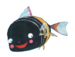
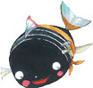
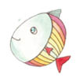

Kış ortasında bir akşam vaktiydi. Denizin en derin yerinde, yaşlı mı yaşlı bir balık nine, sayıları on iki bini bulan çocuklarıyla torunlarını çevresine toplamış, onlara bir masal anlatıyordu:
“Bir varmış bir yokmuş, bir Küçük Kara Balık varmış; bu Küçük Kara Balık annesiyle birlikte bir derede yaşarmış. Bu dere, kayalık bir dağdan çıkar, bir vadi boyunca akarmış. Anne balıkla yavru balığın yuvaları kara bir kaya parçasının arkasındaymış, bu yuvanın tavanı da yosundanmış; anneyle yavrusu her gece orada uyurlarmış. Küçük Kara Balık’ın en sevdiği şey, ay ışığının evlerinin üstüne vurmasıymış.
Her gün, sabahtan akşama kadar, Küçük Kara Balık, annesinin peşine takılır, oraya buraya yüzermiş. Kimi zaman sağa sola koşuşturan başka balıkların arasında kalırlarmış. Küçük Kara Balık’ın başka kardeşi yokmuş; annesi on iki bin yumurta yumurtlamış ama hayatta kalan başka kardeşi olmamış.

Küçük Kara Balık, günlerdir düşünüp duruyormuş.
Orada burada dolaşırken çoğu kez annesinin gerisinde kalıyormuş, annesi de onun biraz hasta olduğunu, yakında yeniden sağlığına kavuşacağını sanıyormuş.
Bir sabah erkenden olanlar olmuş, Küçük Kara Balık annesini uyandırıp şöyle demiş:

“Anneciğim, seninle konuşmak istiyorum.”
“Saatin farkında mısın sen?” diye homurdanmış annesi, henüz tam olarak uyanamadan. “Sonra konuşuruz.”
“Anneciğim, burada daha fazla kalamam ben, gitmeliyim!” demiş Küçük Kara Balık.
“Gitmek istediğine emin misin?” diye sormuş annesi.
“Evet,” demiş Küçük Kara Balık.
“Peki,” demiş annesi, oysa ne olup bittiğini hâlâ anlamamışmış. “Ama sabahın bu erken saatinde nereye gitmek istiyorsun ki?”
Küçük Kara Balık, annesine,
“Bu derenin ucunun nereye çıktığını gidip görmek istiyorum,” demiş. “Bak anneciğim, tam bir aydır bu derenin ucunun nerede olduğunu düşünüp duruyorum. Bunu bir türlü aklımdan çıkaramıyorum. Dün gece sabaha kadar gözlerimi kırpmadım, hep düşünüp durdum. Sonunda gidip ne olduğunu kendi gözlerimle görmeye karar verdim. Başka yerlerde neler olup bittiğini gerçekten bilmek istiyorum...”
Annesi gülmüş,
“Ben de çocukken hep böyle düşünürdüm,” demiş. “Canikom, derelerin başı da yoktur sonu da; bunda bilinecek ne var ki? Akar da akarlar; hiçbir yere ulaşmazlar.”
“Ama anneciğim, her şeyin bir sonu vardır, öyle değil mi? Gecenin sonu vardır, günün sonu vardır, haftanın da, ayın da, yılın da...”
“Bu hayalleri bir kenara bırak da,” diye sözünü kesmiş annesi, “gidelim. Gevezeliğin sırası değil, gel yüzelim.”
“Hayır anneciğim,” diye diretmiş Küçük Kara Balık.